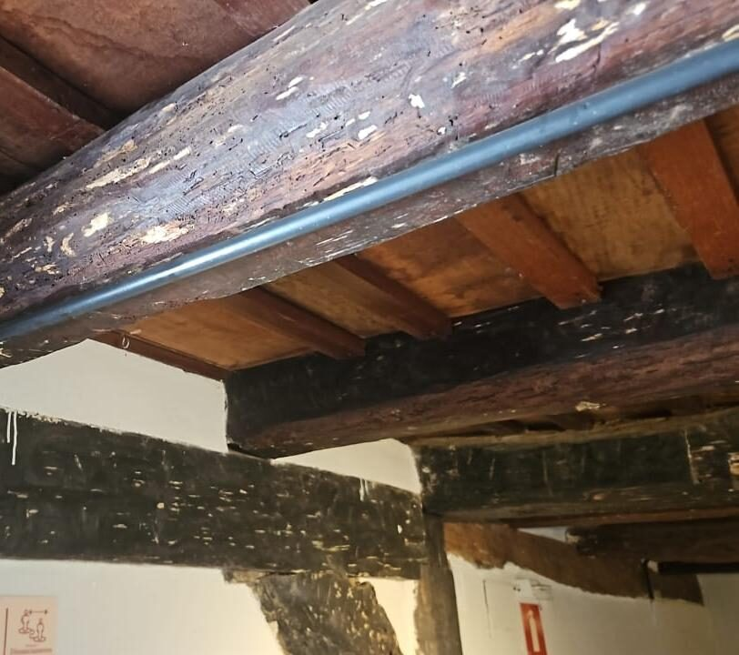
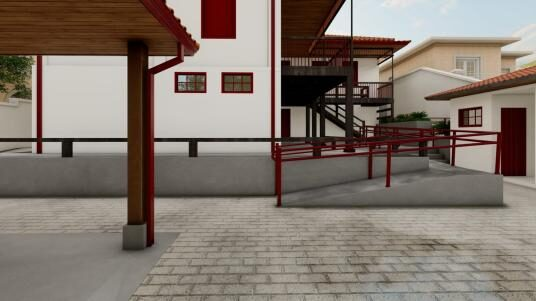
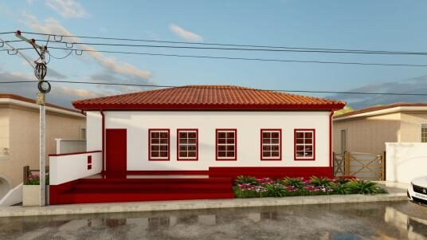
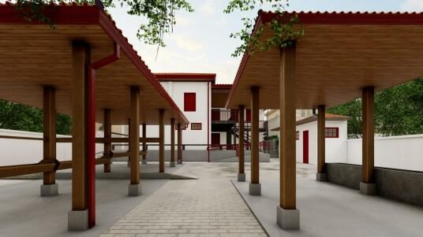

Um museu preparado para as próximas décadas
Revitalização do imóvel, novo projeto museográfico e museu virtual, uma parceria entre a NATA e a Prefeitura Municipal de Itabira.
Por que revitalizar agora
O Museu do Tropeiro é um dos mais relevantes patrimônios históricos, culturais e identitários de Itabira, memória viva do tropeirismo e de sua contribuição decisiva para a formação econômica, social e cultural da região. Passados mais de 20 anos de sua inauguração, o imóvel do século XVIII apresenta desgastes estruturais que pedem atenção técnica e continuada.
A NATA – Núcleo de Amigos da Terra e da Água firmou parceria com a Prefeitura Municipal de Itabira (Termo de Colaboração nº 049/2024) para executar o projeto de revitalização do imóvel e a elaboração do Plano Museológico e Projeto Museográfico, com adequações necessárias à conservação do acervo, à programação cultural e à revitalização da exposição do museu.
A revitalização arquitetônica e museológica está sendo elaborada pela arquiteta Ana Maria Werneck, contratada pela NATA, com projeto que contempla restauração estrutural, adequação de acessibilidade, melhorias nas áreas expositivas, implantação de recursos tecnológicos e reorganização dos fluxos internos do museu.
Já o Plano Museológico está a cargo da consultoria especializada de Célia Maria Corsino, Maíra Freire e João Carlos C. Pereira Souza, com diretrizes para preservação do acervo, ações educativas, modernização da infraestrutura, fortalecimento institucional e sustentabilidade financeira do museu.

Cuidar da estrutura para preservar a história
Um imóvel do século XVIII exige manejo técnico especializado. O diagnóstico estrutural realizado identificou pontos de desgaste em vigas e coberturas, base para o projeto de intervenção arquitetônica que acompanha a revitalização.
Três frentes de trabalho
Plano Museológico
Diretrizes de curadoria, conservação do acervo e programação cultural de longo prazo para o museu.
Projeto Museográfico
Nova concepção de exposição, com apresentação contemporânea do acervo e melhor experiência para o visitante.
Intervenção Arquitetônica
Restauro estrutural do casarão histórico e adequações de acessibilidade, como a nova rampa de acesso.
Um museu para todas as pessoas
Entre as intervenções previstas está a construção de uma nova rampa de acesso, tornando o percurso do museu plenamente acessível.




O museu virtual
Em paralelo à obra física, está em concepção um projeto de museu virtual, não apenas uma digitalização de peças, mas uma segunda camada de experiência museológica, complementar e permanente, capaz de alcançar públicos que talvez nunca visitem o museu pessoalmente. Este site que você está vendo é o primeiro passo dessa jornada.
Acervo digital pesquisável
Fichas catalográficas completas, com imagens em alta resolução para consulta remota.
Tour virtual 360°
Reconstrução navegável dos ambientes do museu, com pontos de interesse interativos.
Acessibilidade digital
Libras, audiodescrição e conformidade com diretrizes internacionais de acessibilidade (WCAG 2.1 AA).
Implementação prevista em fases, com lançamento de um MVP (Início, Acervo Digital básico e Sobre o Museu) podendo anteceder os módulos mais complexos.
Recursos educativos e interativos futuros
Estas ideias vieram do estudo inicial do projeto de museu virtual. Nenhuma está em funcionamento hoje: aparecem aqui, rotuladas como em desenvolvimento, para que os parceiros do projeto entendam o horizonte de possibilidades e decidam quais priorizar, condicionadas à existência de conteúdo real e de recursos para implementação.
Mapa interativo da Estrada Real
Mapa com o trajeto histórico das tropas e a localização do museu em relação a outros pontos da Estrada Real, com informações reais de distância e roteiro.
Quiz do tropeirismo
Perguntas e respostas baseadas nas fichas reais do acervo e na linha do tempo do museu, pensado como recurso educativo para escolas visitantes.
Jogo educativo sobre a tropa
Atividade interativa simulando a organização de uma tropa (carga, arreios, pouso), com base nos objetos reais do acervo.
Loja de artesanato local
Vitrine para produtos de artesãos e grupos culturais de Ipoema, condicionada à definição de produtos reais e de um processo de venda com a Prefeitura ou associações locais.
Apoio e doações
Canal para apoio financeiro ao museu, condicionado à definição institucional de uma chave PIX oficial e de um processo de prestação de contas.
Certificado de visita digital
Lembrança digital gerada após a visita ao museu ou à Roda de Viola, reforçando o vínculo do visitante com a Estrada Real.
Detalhes contratuais e financeiros
Os termos do Termo de Colaboração nº 049/2024, cronograma físico-financeiro e demais documentos oficiais do projeto estão disponíveis com a administração do museu e da Prefeitura de Itabira, e não são reproduzidos nesta página pública.
Solicitar mais informações →